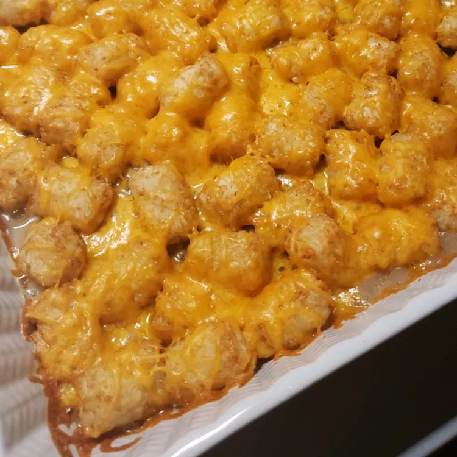

Tater Tot Casserole

Description
This Tater Tot casserole is a quick and easy dinner that everyone will love.
Just four basic ingredients come together for this comforting dish.
Ingredients
- 1 pound ground beef
- 1 (10.5 ounce) can condensed cream of mushroom soup
- Salt and ground black pepper to taste
- 1 (16 ounce) package frozen tater tots
- 2 cups shredded Cheddar cheese
Steps
- Preheat oven to 375 degrees F (190 degrees C).
- Combine ricotta cheese, 1/2 of the mozzarella cheese, Parmesan cheese, egg, and Italian seasoning in a bowl.
- Cook sausage in a skillet over medium heat until no longer pink, 5 to 10 minutes; drain. Stir in marinara sauce.
- Spread 1/6 of the cheese mixture evenly on each flatbread; cover with sausage mixture. Top with remaining mozzarella cheese.
- Bake in the preheated oven until cheese is melted and bubbly, 10 to 15 minutes.